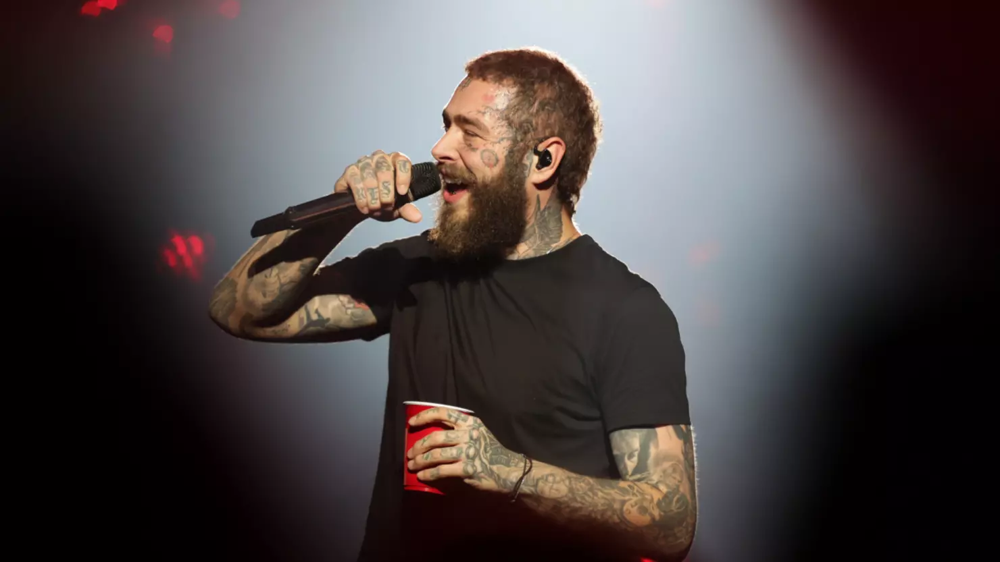

Post Malone

El Donald Trump del hip hop
Hijo de Rich Post y su primera esposa. Sus padres se divorciaron y su progenitor lo crió junto con su segunda esposa, Jodie.
Tenía nueve años cuando su familia se mudó a Texas, debido a que a su padre lo nombraron gerente del equipo Dallas Cowboys.
Su padre trabajó como DJ cuando era más joven. Fue él quien lo expuso a una variedad de géneros musicales.
Se interesó por la música y aprendió a tocar la guitarra después de ver el videojuego Guitar Hero. Realizó una audición para la banda de rock Crown the Empire, aunque fue rechazado.
Comenzó a componer a los doce años, y a los dieciséis creó su primera mixtape, titulada Young and After Them Riches, que compartió con algunos de sus compañeros de escuela en Grapevine High School.
Trabajó en un Chicken Express y asistió al Tarrant County College antes de mudarse a Los Ángeles junto con su amigo Jason Probst, jugador profesional de videojuegos.
Con Probst y otros artistas y productores formaron el grupo BLCKVRD, y Malone escribió la canción White Iverson, lanzada en agosto de 2015.
El 19 de julio de ese mismo año presentó un video para el tema. La canción superó el millón de visitas en el mes siguiente a su publicación. En agosto, firmó contrato con Republic Records.
El 20 de abril de 2016, estrenó la canción Go Flex, y en mayo presentó su mixtape de larga duración titulado August 26.
Lanzó su álbum debut, Stoney, el 9 de diciembre de 2016, en el que apareció su exitoso sencillo Congratulations con Quavo.
El álbum entró en el número 6 del US Billboard 200.
Regresar a mi primera pagina